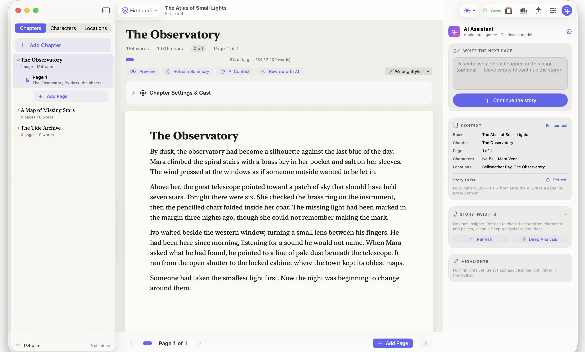

Your next chapterstarts here.
A writing home for novels and picture books. Made for Mac, with your story world and optional AI close at hand.
Download for Mac
Free to use. macOS 26+. Apple silicon.
The whole story,
in view.
Your draft is only part of the picture. Keep chapters, characters, places and the details that matter right beside the page.
A clear page, chapter by chapter. Format your draft, highlight a passage and keep writing as pages break automatically.
Lose yourself
in the story.
A paper-like editor, familiar Mac controls and space to think. The tools are there when you need them, without taking over the page.
Follow the thread
Chapters and automatic page breaks give a long manuscript a little structure. Mention a character or place to connect it to your world.
Leave yourself a note
Highlight a line for later, shape a passage with rich formatting, or reach for a writing command with a slash.
A real Novely draft. An imaginary world.
A little help.
Still your story.
When you want a second pair of eyes, invite AI into the draft. Continue a scene, rethink a passage or explore what happens next, with your book’s context in mind.
AI is optional. Cloud providers bill your own account directly. Novely has no subscription or AI credits.
Every draft
has a future.
Keep the earlier version.
Save a draft before a big rewrite. Compare versions side by side and see what changed, without losing where you started.
Make room for pictures.
Writing for little readers? Arrange text and illustrations on a picture-book canvas, with each page composed your way.
Let the book leave the desk.
Export your novel as a print-ready PDF with trim sizes and margins, or as an EPUB for e-readers. Picture books export to PDF.
Keep your library close.
Your books live locally on your Mac, not in a Novely cloud account. Write without a connection when you’re not using cloud AI.
Before your
first chapter.
Is Novely really free?
Yes. Novely has no subscription, credits or writing limits. If you connect a cloud AI provider, any charges come from that provider on your own account.
Which Mac do I need?
An Apple silicon Mac running macOS 26 or later. Apple Intelligence availability also depends on your device, language and region.
Do I have to use AI?
No. The writing workspace works without AI. When you want assistance, choose Apple Intelligence, a local MLX model, or a connected cloud provider. Ollama is also supported when available on your Mac.
Where does my writing go?
Your library is stored locally on your Mac. If you choose cloud AI, the relevant prompt and story context are sent to that provider for your request, subject to its privacy terms.
Can I make a picture book?
Yes. Picture books have a visual canvas for arranging text and illustrations. Their pages stay as you compose them, rather than splitting automatically, and can be exported to PDF.
How do I download it?
The download buttons take you to Novely’s public GitHub releases. Choose the latest available Mac release and follow its installation notes. If no build is listed yet, check back there for the first release.